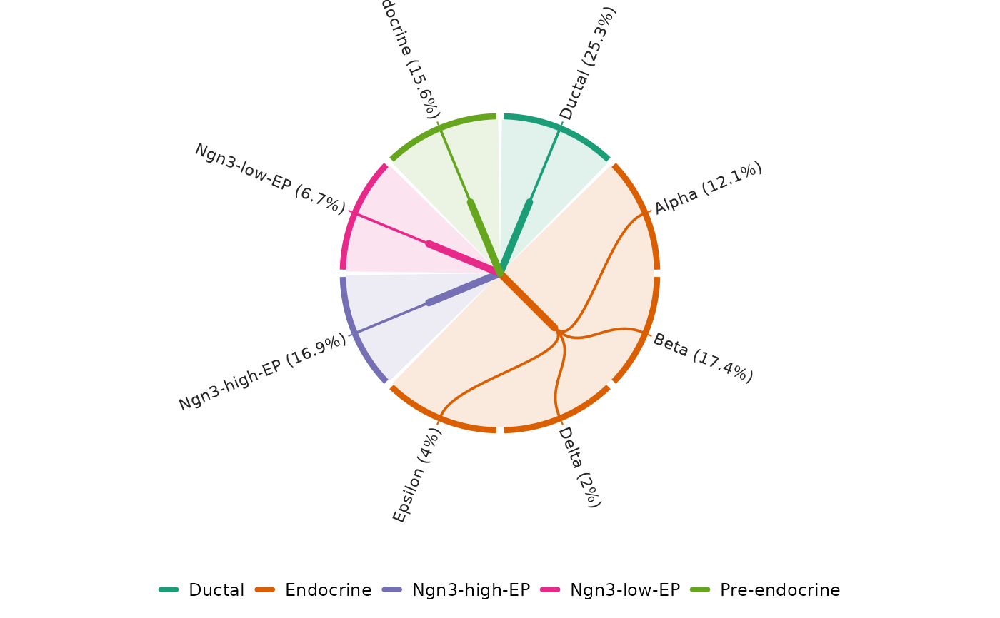
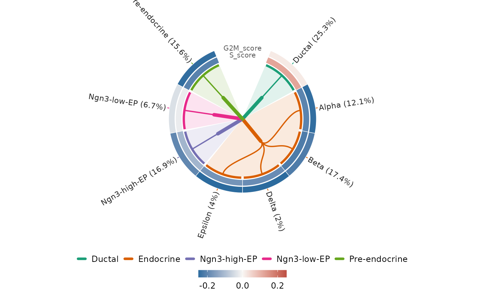
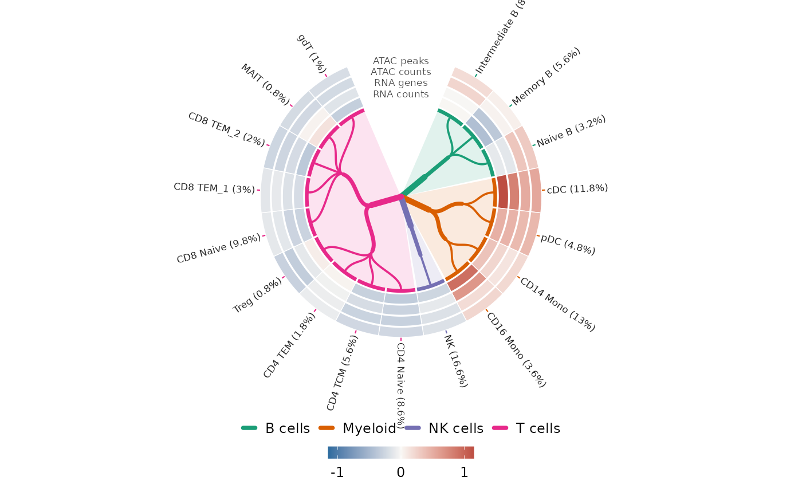
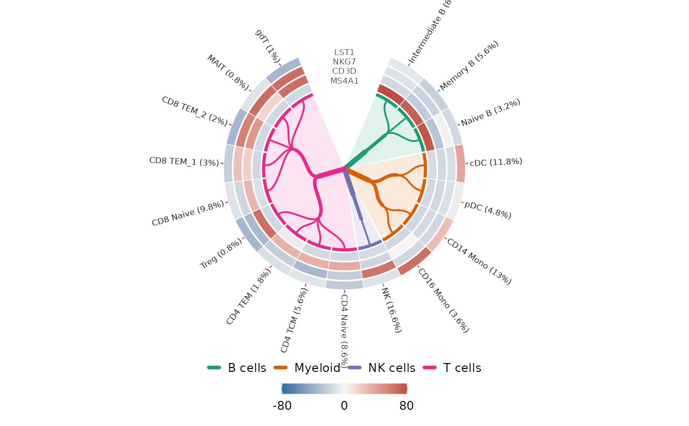

Show cell proportions and optional numeric rings. Requires ggforce.
Usage
CellTreePlot(
object,
levels,
count = NULL,
tracks = NULL,
palette = "Dark2",
palcolor = NULL,
label.size = 3,
show_proportion = TRUE,
title = NULL,
return_data = FALSE,
show_internal_labels = FALSE
)Arguments
- object
A Seurat object or a data frame containing cell annotations.
- levels
One or more unique annotation column names, broadest first. Labels must be nonmissing and nonblank. The names
.countand.proportionare reserved.- count
Column of nonnegative whole counts with a finite positive total. With
NULL, each row counts as one cell.- tracks
Data frame keyed by unique full annotation paths in
object, with one numeric column per ring (inner to outer). Rings share a zero-centered scale. Missing values and omitted paths appear gray.- palette, palcolor
Palette (default
"Dark2") and optional custom colors. Named colors override matching broad groups; other groups use the palette. Unnamed colors follow group order.- label.size
Positive, finite leaf label size (default
3).- show_proportion
Logical. Label each leaf with its share of the total count (default
TRUE).- title
Plot title (default
NULL, no title).- return_data
Logical. Include the leaf and track data (default
FALSE).- show_internal_labels
Logical. Label intermediate levels (default
FALSE).
Value
A ggplot object that accepts layers with +. With
return_data = TRUE, a list with plot, leaves (one row per annotation
path with .count and .proportion), and tracks (aligned to the leaves,
or NULL).
References
Examples
data(pancreas_sub)
hierarchy <- c("CellType", "SubCellType")
CellTreePlot(pancreas_sub, hierarchy)

meta <- pancreas_sub[[]]
scores <- stats::aggregate(meta[c("S_score", "G2M_score")], meta[hierarchy], mean)
CellTreePlot(pancreas_sub, hierarchy, tracks = scores)

data(pbmcmultiome_sub)
pbmc <- pbmcmultiome_sub[[]]
groups <- c(
B = "B cells", "CD4 T" = "T cells", "CD8 T" = "T cells",
NK = "NK cells", DC = "Myeloid", Mono = "Myeloid"
)
pbmc$Group <- unname(groups[as.character(pbmc$CellType)])
hierarchy <- c("Group", "CellType", "SubCellType")
metrics <- c("nCount_RNA", "nFeature_RNA", "nCount_ATAC", "nFeature_ATAC")
tracks <- stats::aggregate(pbmc[metrics], pbmc[hierarchy], stats::median)
subset_medians <- vapply(pbmc[metrics], stats::median, numeric(1))
tracks[metrics] <- Map(
function(x, center) log2(x / center),
tracks[metrics], subset_medians
)
names(tracks)[match(metrics, names(tracks))] <- c(
"RNA counts", "RNA genes", "ATAC counts", "ATAC peaks"
)
CellTreePlot(pbmc, hierarchy, tracks = tracks, label.size = 2.25)

genes <- c("MS4A1", "CD3D", "NKG7", "LST1")
rna <- SeuratObject::LayerData(
pbmcmultiome_sub,
assay = "RNA", layer = "counts", features = genes
)
detected <- as.data.frame(t(as.matrix(rna[genes, rownames(pbmc)] > 0)))
gene_tracks <- stats::aggregate(detected, pbmc[hierarchy], mean)
subset_detection <- colMeans(detected)
gene_tracks[genes] <- Map(
function(x, center) 100 * (x - center),
gene_tracks[genes], subset_detection
)
CellTreePlot(pbmc, hierarchy, tracks = gene_tracks, label.size = 2.25)
